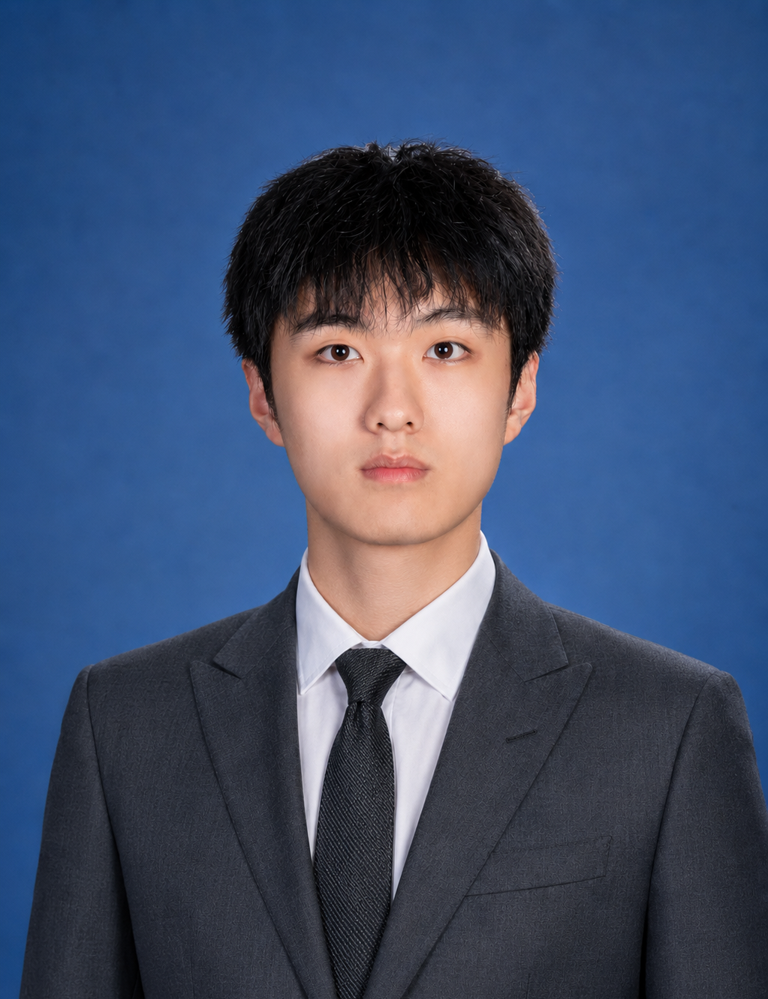

01Vector 01
AI & Sustainability人工智能与可持续发展
Lifecycle assessment of generative AI, LLM carbon modeling, carbon usage effectiveness standards, and green computing policy.生成式人工智能生命周期评估、大语言模型碳排放建模、碳使用效果标准与绿色计算政策。

M.Sc. student in Environmental Science at Universiti Sains Malaysia, researching generative AI inference carbon footprints, lifecycle assessment, green computing policy, atmospheric pollution modeling, and sustainable environmental management. 马来西亚理科大学环境科学硕士研究生，研究方向包括生成式人工智能推理碳足迹、生命周期评估、绿色计算政策、大气污染扩散建模与可持续环境管理。
Interdisciplinary research connecting AI infrastructure, lifecycle assessment, climate impact evaluation, environmental modeling, and sustainability governance. 跨学科研究连接人工智能基础设施、生命周期评估、气候影响评价、环境建模和可持续治理。
Lifecycle assessment of generative AI, LLM carbon modeling, carbon usage effectiveness standards, and green computing policy.生成式人工智能生命周期评估、大语言模型碳排放建模、碳使用效果标准与绿色计算政策。
Pollution dispersion modeling and forecasting environmental impacts under renewable-energy and grid-transition scenarios.污染扩散建模，以及可再生能源与电网转型情景下的环境影响预测。
Environmental policy analysis, hydrogeology, watershed management, land carrying capacity, and urban sustainability assessment.环境政策分析、水文地质、流域管理、土地承载力与城市可持续性评估。
Advisor: Assoc. Prof. Dr. Mohamad Anuar Bin Kamaruddin. Thesis in progress. Language of instruction: English.导师：Assoc. Prof. Dr. Mohamad Anuar Bin Kamaruddin。论文进行中。授课语言：英语。
Core coursework included Atmospheric Science, Environmental Law, Sampling Technology, Hydrogeology, and Scientific Writing.核心课程包括大气科学、环境法、采样技术、水文地质和科学写作。
Lu, H., & Lu, H. (2026). Transitioning to Adaptive Ecosystems: The Role of Artificial Intelligence in Sustainable Environmental Management and Pollution Control. Journal of Technology and Humanities, 7(1).论文讨论人工智能在可持续环境管理和污染控制中的作用。
Lu, H., & Lu, H. (2026). Empirical Lifecycle Assessment of Generative AI Inference Carbon Emissions: Global Trends and the Malaysian “Carbon Arbitrage” Risk (2023-2030). Uniglobal Journal of Social Sciences and Humanities, 5(17).论文评估生成式人工智能推理碳排放的全球趋势与马来西亚“碳套利”风险。
Lu, H. (2023). Patent: A new type of land resource detector. State Intellectual Property Office of P.R. China.卢鸿志 2023 年获得“一种新型土地资源探测器”专利。
Selected thesis and applied research experience in AI carbon accounting, lifecycle assessment, and urban land carrying capacity modeling. 代表性研究经历包括人工智能碳核算、生命周期评估和城市土地承载力建模。
Conducting a bottom-up attributional lifecycle assessment of generative AI inference carbon footprints to quantify Malaysia's digital carbon arbitrage risks and propose Carbon Usage Effectiveness standards.开展自下而上的归因型生命周期评估，量化生成式人工智能推理碳足迹，识别马来西亚数字碳套利风险，并提出碳使用效果标准。
Assessed urban land carrying capacity using a 17-indicator Entropy Weight Method and produced policy recommendations for green infrastructure and spatial layout optimization.使用 17 项指标的熵权法评估城市土地承载力，并提出绿色基础设施和空间布局优化建议。
Both applications below were independently developed by Hongzhi Lu. Visitors can experience them directly inside the academic website or open each app in fullscreen mode. 以下两个应用均由卢鸿志独立开发。访客可以在学术网站内直接体验，也可以打开全屏模式使用。
Sustainability Mobile Application · Developed by Hongzhi Lu可持续发展移动应用 · 卢鸿志独立开发
Eco Scan Monster uses photo-based AI vision to analyze waste or eco-items, assign an environmental impact score, and guide users toward responsible recycling and disposal actions.Eco Scan Monster 使用基于照片的人工智能视觉分析废弃物或环保物品，生成环境影响评分，并引导用户进行负责任的回收与处理。
For full camera and file-upload behavior, deploy through HTTPS. GitHub Pages provides HTTPS by default.如需完整相机和文件上传体验，请通过 HTTPS 部署。GitHub Pages 默认支持 HTTPS。
Health Gamification Application · Developed by Hongzhi Lu健康游戏化应用 · 卢鸿志独立开发
Human Battery Baby transforms personal energy management into a playful battery-pet interface. It estimates daily energy capacity with BMR/TDEE logic and turns eating, exercise, sleep, and health guidance into interactive charging and discharging actions.人体电池宝宝将个人能量管理转化为电池宠物界面。软件基于 BMR/TDEE 逻辑估算每日能量池，并把饮食、运动、睡眠和健康建议转化为可互动的充放电体验。
This prototype is for educational and behavioral-awareness purposes, not medical diagnosis or clinical guidance.该原型用于教育展示和行为意识提升，不用于医学诊断或临床指导。
Co-organized by WWF-Malaysia & SEAmply Sustainable · Kuala Lumpur, Malaysia · Aug 2024由 WWF-Malaysia 与 SEAmply Sustainable 联合主办 · 马来西亚吉隆坡 · 2024 年 8 月
I am open to academic collaboration, sustainability research discussions, and applied projects related to AI carbon accounting, lifecycle assessment, environmental modeling, green computing policy, and sustainability software.欢迎围绕人工智能碳核算、生命周期评估、环境建模、绿色计算政策和可持续发展软件开展学术合作、研究讨论与应用项目交流。